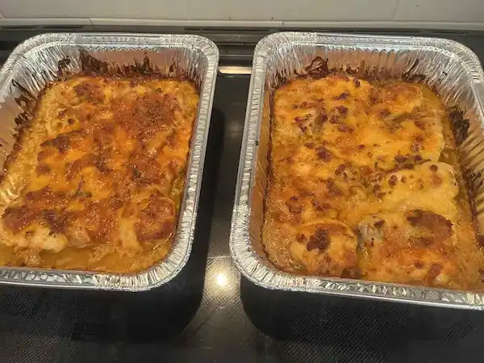

Cheddar Bacon Chicken

Ingredients
1 Tbsp Vegetable Oil
2 large Chicken Breasts, boneless and skinless
1 Tbsp Teriyaki Basting Sauce
2 Tbsp Ranch Salad Dressing
1 c Cheddar Cheese, shredded
3 slices cooked Bacon, broken into smaller pieces
Instructions
1. Preheat oven to 350℉. Heat oil in pan.
2. Butterfly Chicken Breasts into thinner slices. Lightly brown each piece in hot oil for about 8-10 minutes.
3. Place Chicken in 9x13 baking dish.
4. Brush Teriyaki sauce evenly over top of Chicken, then cover with Ranch. Sprinkle Cheese and Bacon on top.
5. Bake for 25-30 minutes, or until cheese is melted and bubbly.